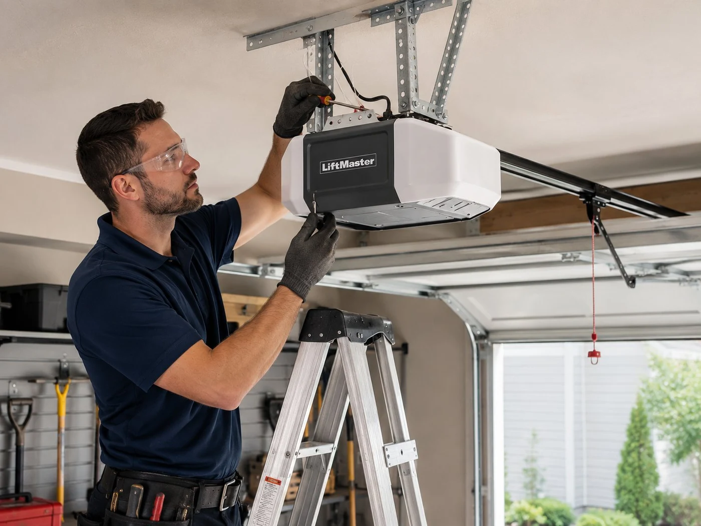

Most opener problems don't require a new unit
A garage door opener that won't respond, moves slowly, makes grinding noises, or stops mid-cycle isn't necessarily dead. The majority of opener failures we see in Columbus homes are caused by one of three things: a stripped drive gear, a logic board failure, or a safety sensor issue. All of these are repairable, and all of them are significantly cheaper than buying a new opener.
Where replacement makes sense is when the opener is past fifteen years old, the motor has failed, or it predates modern safety standards. At that point, the cost of repair approaches the cost of a new unit and a new opener comes with better features, a warranty, and modern safety sensors.
Opener not responding at all? Check why your garage door opener isn't working first — the fix is sometimes simpler than a repair call. Upgrading to a smart garage door opener is also worth considering when your current unit needs replacing.

Common opener problems we fix
Stripped drive gear
The drive gear is a nylon gear inside the opener that transfers motor power to the drive mechanism. It strips over time — you'll hear the motor running but the drive shaft isn't turning. This is a very common repair on openers in the 8–12 year range. Gear replacement is typically $80–$150 in parts and labor.
Logic board failure
The logic board controls all opener functions — travel limits, force settings, remote programming, and safety features. Board failures often present as intermittent behavior: works sometimes, not others, or loses programming randomly. Replacement boards are available for most major brands.
Safety sensor issues
The two sensors at the base of the door tracks send an infrared beam across the opening. If anything interrupts the beam — or if the sensors are misaligned, dirty, or wired incorrectly — the door won't close. This is the single most common reason a Columbus homeowner calls us thinking their opener has failed when the opener is actually fine. If you're troubleshooting before calling, our garage door opener not working guide covers the most common causes and fixes.
Remote and keypad problems
Dead remote batteries are obvious. Less obvious: a remote that's lost its programming, a keypad with a worn button matrix, or a receiver board that's stopped accepting new codes. We can reprogram remotes, replace keypads, and diagnose receiver issues on the same visit.
"We had a call from a homeowner in Westerville who'd been told by another company that his LiftMaster needed full replacement — they quoted him $600. When we got there, it was a stripped drive gear and a logic board that had lost its limit settings. Parts and labor came to $140. The opener was 9 years old and had plenty of life left. That's not an uncommon story."
Considering an upgrade while we're already on site? See our guide to smart garage door openers — Wi-Fi openers with app control and real-time alerts are worth the modest cost difference for most Columbus homeowners.
New opener installation
When replacement is the right call, we install LiftMaster and Chamberlain units — the most reliable brands for Columbus's climate, with the widest parts availability. We can also install smart openers with app control, auto-close timers, and delivery access features.
- Belt drive openers — quiet operation, ideal for attached garages below living spaces
- Chain drive openers — reliable and cost-effective for detached garages
- Smart openers with myQ app control — open, close, and monitor from anywhere
- Battery backup models — door operates during power outages
- High-cycle commercial openers for multi-family and commercial properties
Opener repair questions
Can my opener be repaired?
Most can. Stripped gears, logic boards, sensors, and remotes are all repairable. If the motor has burned out and the unit is over 15 years old, replacement usually makes more sense.
How much does opener repair cost?
Repair typically runs $100–$250. New opener installation with a mid-range belt drive unit is $250–$500 including labor. Written quote before work starts.
What brands do you service?
All major brands: LiftMaster, Chamberlain, Genie, Craftsman, Overhead Door, Wayne Dalton, Linear, Marantec. LiftMaster and Chamberlain are most common in Columbus.
Do you program remotes and keypads?
Yes. Remote programming and keypad setup are included with any opener repair or installation. We also program HomeLink in-vehicle buttons if needed.